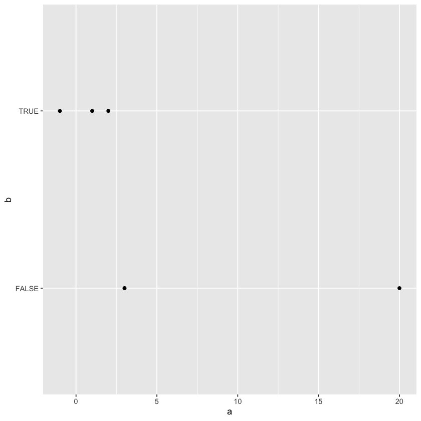

Lecture 1: Preliminaries
R and RStudio
R is a statistical computing environment:
- open source and free software for statistical computation and graphics and
- a computer language designed for typical statistical and graphical applications
R is an interpreted language:
You type some commands (via at terminal/command prompt or from a file called a script), and R processes those commands.
In this course, we will use RStudio to interact with R. RStudio is an integrated development environment, in other words user friendly software to interact with a language.
How to install R and RStudio
You can install R from:
The Comprehensive R Archive Network
You can install RStudio from:
Download the RStudio IDE - RStudio
Here's a webpage that explains the installation process in steps for different operating systems:
Install R and RStudio - A Step-by-Step Guide for Beginners - TechVidvan
Here's a Youtube tutorial for MacOS:
How to install R and RStudio on Mac - YouTube
Here's a Youtube tutorial for Windows:
How to download and install R and RStudio - YouTube
Basic calculations in R
You can use R as a calculator and let it process a one line operation:
1+2
3
Here's a tidy website that contains a list of useful operators: R Operators - Learn By Example
In this course, we'll be doing more complex computations and we'll need to save the result of a computation to be used later in some other computation. For that reason, we have variables. You can think of a variable as a keyword you chose to store a particular piece of information (numerical, or text or even logical).
In R, there are two ways to assign a value to a variable:
using = and using <-
First you type the name of the variable you chose, then you type = or <- and then you put what value you want to assign to that variable. That value can be the result of some calculation, can be the output of some function, it can be a number or text or logical value you want to store.
# note that, when you make an assignment, you don't get an output.
# if you're using RStudio, the variable and its value can be seen in the Environment pane
a = 3 ^ 2 #(example: exponentiation)
# if you want R to return the value of a variable to the console, you'll need to type the name
a
9
b <- 8 %/% 3 #(example: integer division)
b
2
# you can see the variables in RStudio in a nice, organized way in the Environment pane
# but if you want to see a list of variables in the Console:
ls()
- 'a'
- 'b'
Note that R is case sensitive, for example a and A are treated as different variable names.
A = 7
a
9
A
7
If you want to update the value of a variable, you can do that of course.
A = 10
# now the value of A is not 7 anymore, but 10.
A
10
Basic Data Types in R
Here's a nice reference for more on basic data types and data structures in R:
https://swcarpentry.github.io/r-novice-inflammation/13-supp-data-structures/
There are 6 data types in R:
- character
- numeric (real or decimal)
- integer
- logical
- complex
You can find out the type of an object using the typeof() function. We'll discuss functions below, but basically they are self-contained algorithms built to perform a specific task. A function expects a user to give arguments as input and based on the values of the arguments, a function produces an output.
# character values are anything that is to be treated as text
typeof("ab")
'character'
In the example above, we gave "ab" as the input to the function typeof() by typing "ab" between the parentheses, and the typeof() function returned us the type of "ab" as the output.
# R will decide how to store the value unless you specify the data type manually
typeof(2)
'double'
(If you wonder why the word 'double', double just means a decimal number in double precision, i.e. two decimals after the decimal point.)
# by using '' or "", we can tell R that we're using a characters
typeof('2')
'character'
You can store text in a variable as well. To store a text value, you'll need to use " or '. Otherwise, R thinks you're typing the name of a variable.
# note the the ' signs between the " signs are treated as apostrophes:
mytext <- "I'm having a great 'day' today."
mytext
'I\'m having a great \'day\' today.'
The backslash before the apostrophe \' is R's way of remembering that ' sign is to be treated as an apostrophe, but not as a delimiter of some text data.
# the backslashes above are to denote escape sequences
# \' tells R to treat the apostrophe as a character
# to print nicely, you can use the cat() function
cat(mytext)
I'm having a great 'day' today.
typeof(2L) # the L on the right tells R to store 2 as an integer
'integer'
typeof(-12.4)
'double'
typeof(T)
'logical'
typeof(FALSE)
'logical'
typeof(1+4i)
'complex'
Basic Data Structures in R
Data structures are ways to store (usually multiple) values together in a specific way.
R has multiple data structures.
The most important ones for us include:
- atomic vector
- list
- matrix
- data frame
- factors
# you can think of vectors as lists/arrays
# that contain items of the same type
# the function c() below combines items to create vectors
vec1 <- c(1,2,3,20,3)
vec2 <- c(T,T,F,F,FALSE, TRUE)
vec3 <- c('a','stats', '614', "\'")
vec4 <- c(2L, -5L)
vec5 <- 1:10
length(vec1)
5
typeof(vec2)
'logical'
typeof(vec3)
'character'
cat(vec4)
2 -5
2*vec4
- 4
- -10
vec5
- 1
- 2
- 3
- 4
- 5
- 6
- 7
- 8
- 9
- 10
vec6 <- vec5 - vec5
vec6
- 0
- 0
- 0
- 0
- 0
- 0
- 0
- 0
- 0
- 0
vec4 + vec6
- 2
- -5
- 2
- -5
- 2
- -5
- 2
- -5
- 2
- -5
vec7 <- c(1,2,3)
typeof(vec7)
'double'
vec8 <- c(1L,2L,3L)
typeof(vec8)
'integer'
# in R, == means comparing and asking if the items are equal
vec7 == vec8
- TRUE
- TRUE
- TRUE
# the str() function compactly displayes the internal STRucture of an R object
# rdocumentation.org/packages/utils/versions/3.6.2/topics/str
str(vec8)
int [1:3] 1 2 3
How to add a new element
# below, i'm combining vec8 and the number 4 as an integer,
# the number 4 is appended on the right,
# hence the last item of vec9 is 4
vec9 <- c(vec8,4L)
vec9
- 1
- 2
- 3
- 4
# below, the number zero is appended to vec9 on the left,
# i.e. the first item in vec10 is 0
vec10 <- c(0L,vec9)
vec10
- 0
- 1
- 2
- 3
- 4
How to create vectors from a sequence of numbers
# the 1:10 command creates a sequence of integers that start at 1 and end at 10
vec11 <- 1:10
vec11
- 1
- 2
- 3
- 4
- 5
- 6
- 7
- 8
- 9
- 10
# you can create sequences more directly using the seq() function
# you specify where the sequence of numbers start, end and the stepsize.
vec12 <- seq(from = 1, to = 2, by = 0.1)
vec12
- 1
- 1.1
- 1.2
- 1.3
- 1.4
- 1.5
- 1.6
- 1.7
- 1.8
- 1.9
- 2
# if the stepsize is not given, the default stepsize is used, which is 1.
vec12 <- seq(from = 1, to = 20)
vec12
- 1
- 2
- 3
- 4
- 5
- 6
- 7
- 8
- 9
- 10
- 11
- 12
- 13
- 14
- 15
- 16
- 17
- 18
- 19
- 20
Factors
Factors are categorical variables in R. We'll talk about categorical variables and factors later, but as foreshadowing, we can use categorical variables to create hierarchies in the sense that we can compute the mean age of everyone, and at a detailed level, we can compute the mean age of female and male people using "Female" and "Male" categories.
vec13 = as.factor(c("Male", "Female", "Male", "Female"))
vec13
- Male
- Female
- Male
- Female
Levels:
- 'Female'
- 'Male'
# note that R automatically decides what the underlying data type is when creating a vector
# the items in a vector need to be of the same data type.
vec14 = c(1,TRUE,'A')
class(vec14)
'character'
Lists
# what if we want to store items of different data types and keep the data types as they are?
# we use lists
mylist <- list(1,TRUE,'A')
mylist
- 1
- TRUE
- 'A'
typeof(mylist)
'list'
mylist2 <- list(mylist, c(1,2,3))
mylist2
- 1
- TRUE
- 'A'
-
- 1
- 2
- 3
mylist3 <- c(mylist, c(1,2,3))
mylist3
- 1
- TRUE
- 'A'
- 1
- 2
- 3
Data Frames
You can think of data frames as lists of vectors of equal length forming columns.
Or even better, like a spreadsheet.
# to create a data frame from vectors, you can use the data.frame() function
data.frame(vec1,vec2,vec3)
Error in data.frame(vec1, vec2, vec3): arguments imply differing number of rows: 5, 6, 4
Traceback:
1. data.frame(vec1, vec2, vec3)
2. stop(gettextf("arguments imply differing number of rows: %s",
. paste(unique(nrows), collapse = ", ")), domain = NA)
# since those vectors were of different lengths, R couldn't create a data frame.
# below, i use length() and cat() functions to return the lengths of the vectors we tried to combine to a data frame above.
cat(length(vec1),length(vec2),length(vec3))
5 6 4
vec15 <- c(vec1,-1)
vec16 <- c('one', "two", vec3)
# note that vec15, vec2 and vec16 have the same length after modifying them for the sake of this example.
cat(length(vec15),length(vec2),length(vec16))
6 6 6
# we can create the data frame.
data.frame(vec15,vec2,vec16)
| vec15 | vec2 | vec16 |
|---|---|---|
| 1 | TRUE | one |
| 2 | TRUE | two |
| 3 | FALSE | a |
| 20 | FALSE | stats |
| 3 | FALSE | 614 |
| -1 | TRUE | ' |
# it's customary to denote the variable that represents a data frame
# by the variable name df
df <- data.frame(a = vec15,b = vec2,c = vec16, d = vec2 + vec15)
df
| a | b | c | d |
|---|---|---|---|
| 1 | TRUE | one | 2 |
| 2 | TRUE | two | 3 |
| 3 | FALSE | a | 3 |
| 20 | FALSE | stats | 20 |
| 3 | FALSE | 614 | 3 |
| -1 | TRUE | ' | 0 |
Matrices
# the matrix function creates a matrix below that contains 3 rows and 2 columns
# the difference of a matrix is that the data types of the items in a matrix need to be equal
# you can think of matrices as a 2D generalization of vectors.
mymatrix = matrix(vec16, 3, 2)
mymatrix
| one | stats |
| two | 614 |
| a | ' |
# finding the transpose matrix: columns are converted to rows and rows to columns.
# for example, the first column of the matrix above is the first row of the transpose below.
t(mymatrix)
| one | two | a |
| stats | 614 | ' |
Indexing
# how to grab the second value of a vector
vec3[2]
'stats'
vec3
- 'a'
- 'stats'
- '614'
- '\''
1:3 # means all the numbers between 1 and 3 (1 and 3 included)
- 1
- 2
- 3
# what if we want more values
vec3[1:3]
- 'a'
- 'stats'
- '614'
vec3[-1]
- 'stats'
- '614'
- '\''
Filtering using Boolean values
length(vec3)
4
vec3[c(T,T,F,T)]
- 'a'
- 'stats'
- '\''
vec3[c(1,2,4)]
- 'a'
- 'stats'
- '\''
vec3[5]
NA
# similar with lists, but remember: you get sublists
mylist
- 1
- TRUE
- 'A'
mylist[1:2]
- 1
- TRUE
mylist[1]
- 1
typeof(mylist[1])
'list'
# to get the actual items
mylist[[1]]
1
# giving names to items
mylist4 <- list("a" = vec1,
"vec2" = vec2,
namewithouthquotes = vec3,
mynumber = 20,
list(vec1, vec2, vec3), mean)
mylist4
- $a
-
- 1
- 2
- 3
- 20
- 3
- $vec2
-
- TRUE
- TRUE
- FALSE
- FALSE
- FALSE
- TRUE
- $namewithouthquotes
-
- 'a'
- 'stats'
- '614'
- '\''
- $mynumber
- 20
- [[5]]
-
- 1
- 2
- 3
- 20
- 3
-
- TRUE
- TRUE
- FALSE
- FALSE
- FALSE
- TRUE
-
- 'a'
- 'stats'
- '614'
- '\''
-
- [[6]]
function (x, ...) UseMethod("mean")
# we gave names to items in the list
names(mylist4)
- 'a'
- 'vec2'
- 'namewithouthquotes'
- 'mynumber'
- ''
- ''
mylist4[1]
- 1
- 2
- 3
- 20
- 3
mylist4["a"]
- 1
- 2
- 3
- 20
- 3
Slicing/indexing data frames
df
| a | b | c | d |
|---|---|---|---|
| 1 | TRUE | one | 2 |
| 2 | TRUE | two | 3 |
| 3 | FALSE | a | 3 |
| 20 | FALSE | stats | 20 |
| 3 | FALSE | 614 | 3 |
| -1 | TRUE | ' | 0 |
df$a
- 1
- 2
- 3
- 20
- 3
- -1
df["a"]
| a |
|---|
| 1 |
| 2 |
| 3 |
| 20 |
| 3 |
| -1 |
df[["a"]]
- 1
- 2
- 3
- 20
- 3
- -1
df[[1]]
- 1
- 2
- 3
- 20
- 3
- -1
df[1][4]
Error in `[.data.frame`(df[1], 4): undefined columns selected
Traceback:
1. df[1][4]
2. `[.data.frame`(df[1], 4)
3. stop("undefined columns selected")
# 1st column 4th row
df[[1]][4]
20
df[[1]][4:6]
- 20
- 3
- -1
# first row 4th column
df[1,4]
2
df[4,1]
20
df[1,]
| a | b | c | d | |
|---|---|---|---|---|
| 1 | 1 | TRUE | one | 2 |
df[c(1,2,4),]
| a | b | c | d | |
|---|---|---|---|---|
| 1 | 1 | TRUE | one | 2 |
| 2 | 2 | TRUE | two | 3 |
| 4 | 20 | FALSE | stats | 20 |
mymatrix
| one | stats |
| two | 614 |
| a | ' |
mymatrix[1,2]
'stats'
Functions
new_sum <- function(value1, value2){
results <- value1 + value2
return(results)
}
new_sum(2,4)
6
new_division <- function(x,y){
return(y/x)
}
new_division(5,4)
0.8
new_division(y=4,x=5)
0.8
new_division
function (x, y)
{
return(y/x)
}?mean
Packages
# installing a library
install.packages("ggplot2")
Updating HTML index of packages in '.Library'
Making 'packages.html' ...
done
# importing a library
library(ggplot2)
# once you import a library, you can call any function from that library
ggplot(df, aes(a,b)) + geom_point()
